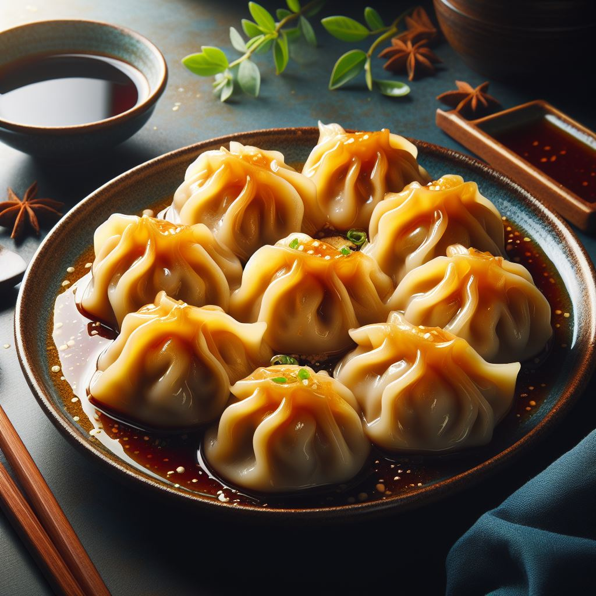
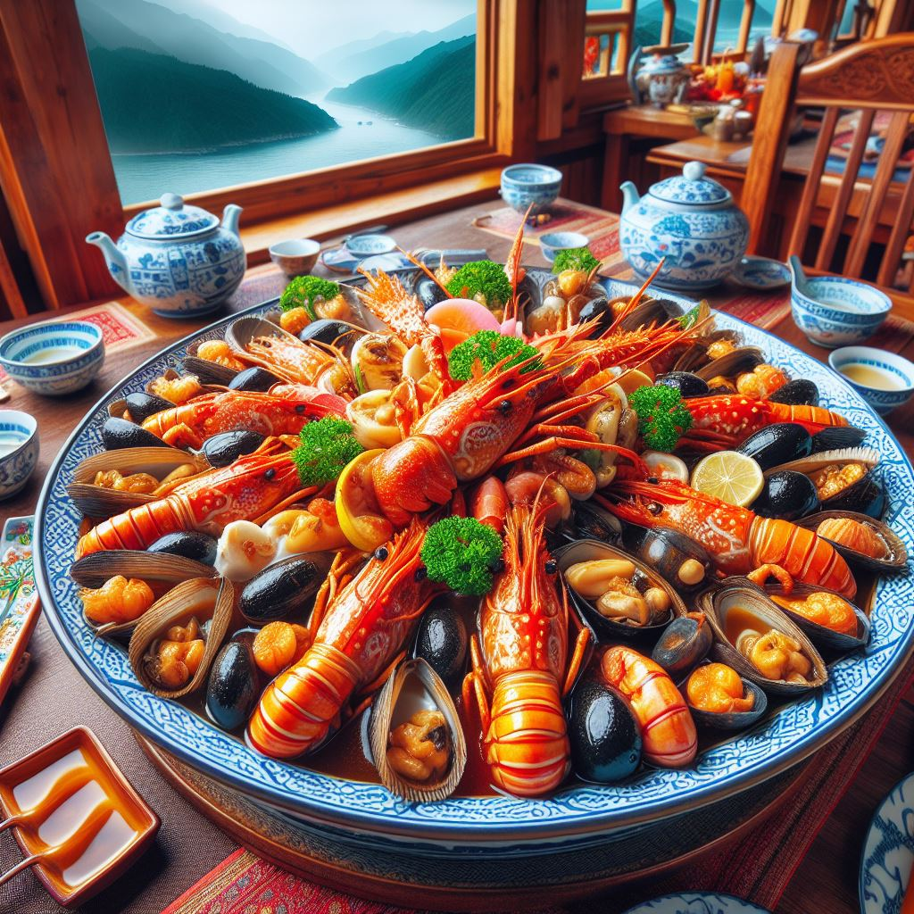
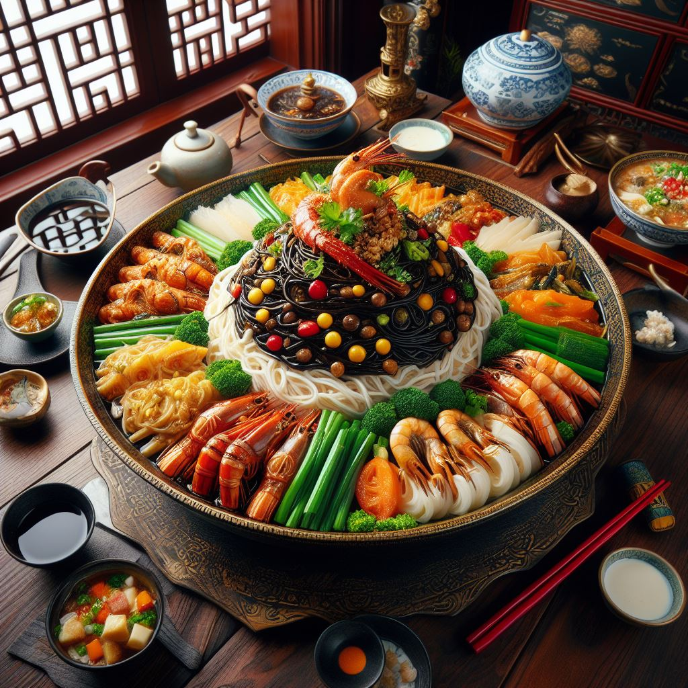

Productos estrella de Hong Xiang:
Descripción del productoDescubre la exquisita fusión de sabores y texturas en el arroz chino tres delicias de Hong Xiang. Este plato clásico cautiva con su combinación perfecta de arroz fragante, huevos revueltos, trozos de jamón, gambas frescas y verduras crujientes, todo salteado en la sartén con la sazón especial de Hong Xiang. Cada bocado es una experiencia gastronómica que te transporta a los callejones bulliciosos de China, donde los aromas tentadores llenan el aire y los sabores auténticos te hacen volver por más. Con el arroz chino tres delicias de Hong Xiang, no solo disfrutarás de una comida deliciosa, sino que también te sumergirás en una cultura rica y vibrante. Prepárate para deleitar tus sentidos y descubrir el placer culinario en su máxima expresión. ¡Hong Xiang te invita a saborear el mundo de la cocina china con cada exquisita cucharada! |

Descripción del productoLos dumplings de Hong Xiang son una obra maestra de la gastronomía china. Cada bocado es una explosión de sabores y aromas que te transporta a las calles de Shanghai. Estas pequeñas delicias están cuidadosamente elaboradas con una fina masa rellena de carne sazonada, vegetales frescos y especias exóticas, todo envuelto en una forma elegante y sellado a mano con maestría. Al vapor, fritos o hervidos, los dumplings de Hong Xiang son versátiles y satisfacen todos los gustos. Sumérgelos en salsa de soja o vinagre de arroz para resaltar aún más su sabor único. Cada mordisco es una experiencia culinaria que despierta tus sentidos y te deja ansiando más. Disfruta de estos bocados de felicidad en cualquier ocasión, ya sea como aperitivo, plato principal o tentempié nocturno. Con los dumplings de Hong Xiang, cada comida se convierte en una celebración de la tradición, el sabor y la alegría de compartir con seres queridos. ¡Descubre el placer de los dumplings de Hong Xiang y deja que tu paladar viaje a lo más profundo de la cocina china! |

Descripción del productoLa frescura del mar cobra vida en la selección de mariscos de Hong Xiang. Desde gambas jugosas hasta cangrejos delicados y calamares tiernos, cada bocado es una oda a la exquisitez del océano. Nuestros mariscos son cuidadosamente seleccionados de las aguas más prístinas y cocinados con maestría para resaltar su sabor natural y su textura suculenta. Sumérgete en el placer de degustar langostinos a la parrilla, mejillones al vapor o pulpo a la gallega, cada plato una experiencia sensorial única que te transporta a las costas lejanas. Con cada tenedor, descubre un mundo de sabores intensos y aromas tentadores que te hacen soñar con el mar. Ya sea en una comida familiar o una cena romántica, los mariscos de Hong Xiang son la elección perfecta para deleitar a tus seres queridos y crear recuerdos inolvidables alrededor de la mesa. Prepárate para una aventura culinaria incomparable con los mariscos de Hong Xiang, donde la frescura y la excelencia se fusionan para ofrecerte una experiencia gastronómica inigualable. |

Descripción del productoEl pollo al limón de Hong Xiang es una deliciosa combinación de sabores frescos y jugosos. Cada bocado es una explosión de sabor que te transporta a los campos soleados de Asia, donde los limones brillan bajo el sol tropical. Nuestro pollo, tierno y jugoso, se cocina a la perfección y se cubre con una irresistible salsa de limón, equilibrada con notas dulces y ácidas. Cada corte revela la delicada mezcla de sabores, creando una experiencia culinaria que deleita los sentidos y alimenta el alma. Acompañado de arroz blanco o verduras al vapor, este plato es una opción perfecta para una comida reconfortante y nutritiva. Ya sea para una cena familiar o una reunión con amigos, el pollo al limón de Hong Xiang es una elección segura que dejará a todos con ganas de más. Descubre el placer de este clásico plato chino y deja que el sabor fresco y vibrante del limón te sorprenda en cada bocado. Con Hong Xiang, cada comida se convierte en una aventura gastronómica inolvidable. |

Descripción del productoEl plato variado chino tradicional de Hong Xiang es un festín para los sentidos que te sumerge en la riqueza de la cocina oriental. Este festín incluye una amplia variedad de sabores y texturas, desde la suavidad del tofu al vapor hasta la crujiente ternura del pato a la pekinesa. Saborea el arroz frito al wok con vegetales frescos y mariscos, y déjate seducir por la dulzura de las costillas de cerdo a la barbacoa. Disfruta de la frescura de los rollitos de primavera rellenos de vegetales y carne, y deléitate con la intensidad de los dumplings al vapor. Cada plato es una obra maestra culinaria que refleja la diversidad y la riqueza de la tradición gastronómica china. Con el plato variado chino tradicional de Hong Xiang, cada comida se convierte en una experiencia memorable que celebra la abundancia y la generosidad de la mesa compartida. Sumérgete en este festín de sabores exquisitos y descubre el placer de la auténtica cocina china con Hong Xiang, donde la tradición se une a la innovación para crear momentos inolvidables. |